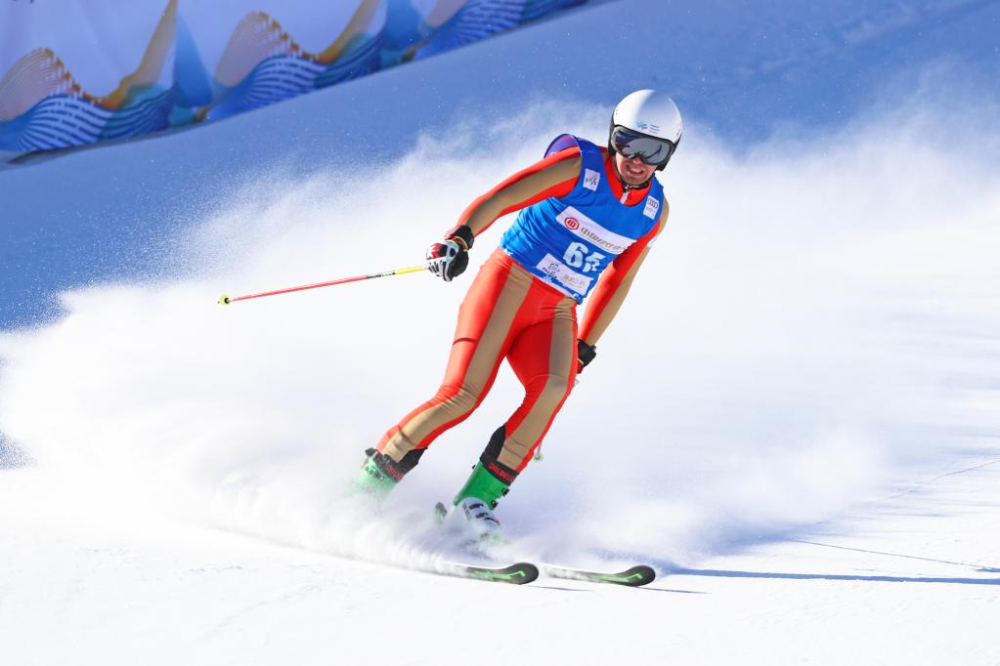
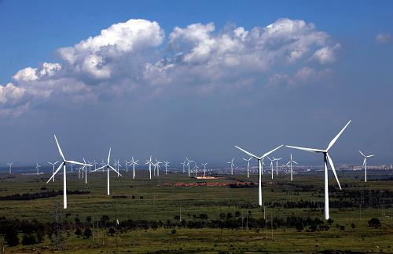
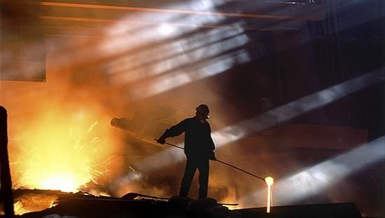
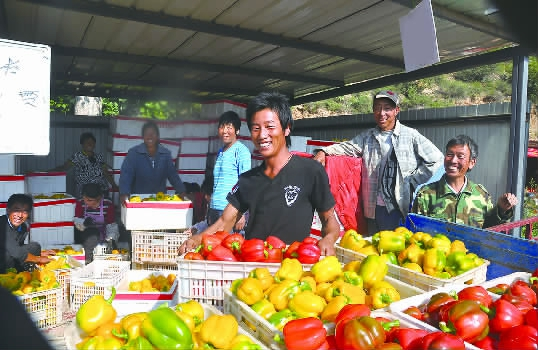

Winter olympics

The 2022 Beijing Winter Olympics will be held in Zhangjiakou, China, which will be an opportunity for the city to comprehensively accelerate economic development. Zhangjiakou will become an important venue for the Beijing Winter Olympics, attracting a large number of domestic and foreign sports fans, tourists and media attention, promoting the development of tourism, accommodation, transportation, catering and other related industries, and driving employment growth. At the same time, the Zhangjiakou Municipal Government has also accelerated the pace of urban infrastructure construction, investing a lot of money in the improvement of urban transportation, municipal public facilities, etc., to provide better services and facilities to attract and meet new industrial needs, and further strengthen Development and modernization of the local economy. In addition, the holding of the Winter Olympics will also accelerate the development of Zhangjiakou's sports industry, improve the city's popularity, and increase the city's attractiveness .
Wind Farm

Zhangjiakou's wind farm is one of the characteristic industries in the region, and its construction has injected strong impetus into the local economic development. Yichi Wind Farm is one of the largest mountain wind farms in China, with an annual power generation capacity of 1 billion kWh. Great Wall Renewable Energy Co., Ltd. also has an advantage in the global wind energy field and has become one of the leading wind power companies in China. The development of these enterprises has provided employment opportunities, and also promoted the development of the renewable energy industry in Zhangjiakou area, further improving the level of economic development in the area.
Steel Industry

Zhangjiakou has a relatively complete iron and steel industry chain, with many large iron and steel enterprises and supporting suppliers, such as Tangshan Iron and Steel, Valin Iron and Steel, etc., forming a relatively complete industrial cluster. In recent years, with the increasing demand in domestic and foreign markets, the export volume of Zhangjiakou's iron and steel enterprises has continued to increase, driving the growth of the local economy.
Agricultural Development

Zhangjiakou is a large agricultural county with rich resources of agricultural products. In recent years, with the advancement of agricultural industrialization, Zhangjiakou's agricultural product processing industry has developed rapidly, such as green bamboo shoot processing and apple processing, which have driven local farmers to increase their income.
FROM GROUP1|Liang Jiaxin-Liu Zhuofan-Hu Kaiyi-Dong Zhenzheng-Shu Xiaoyu-Liu Daiyong